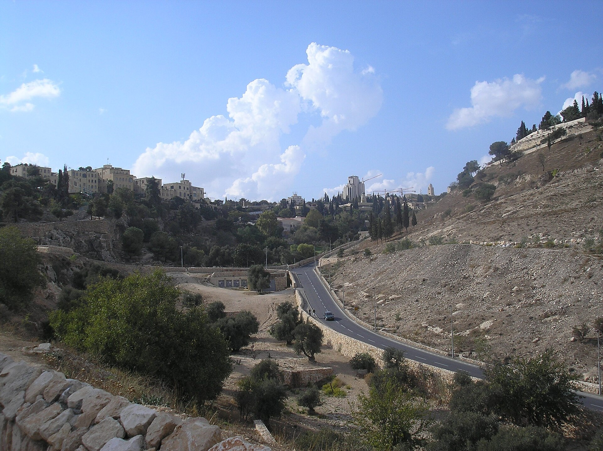
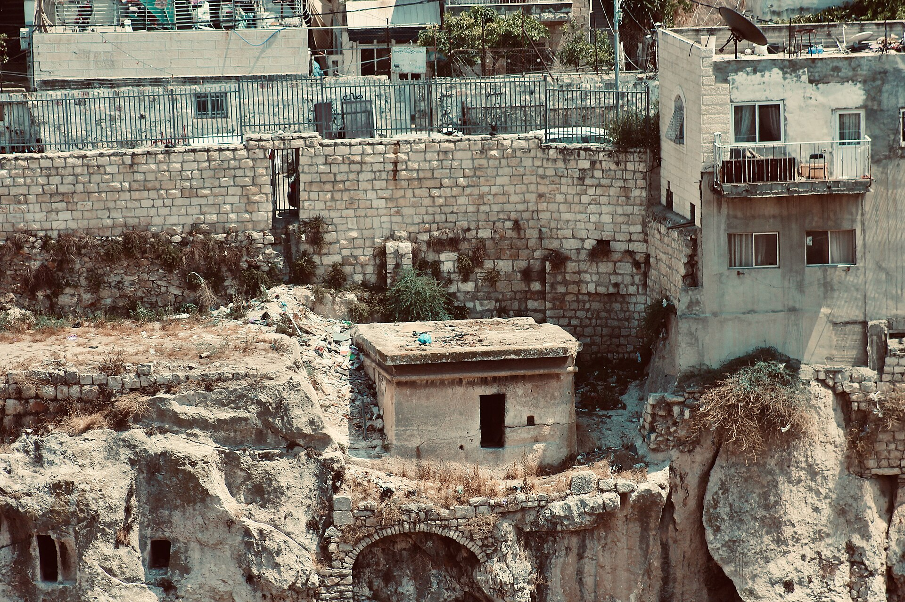
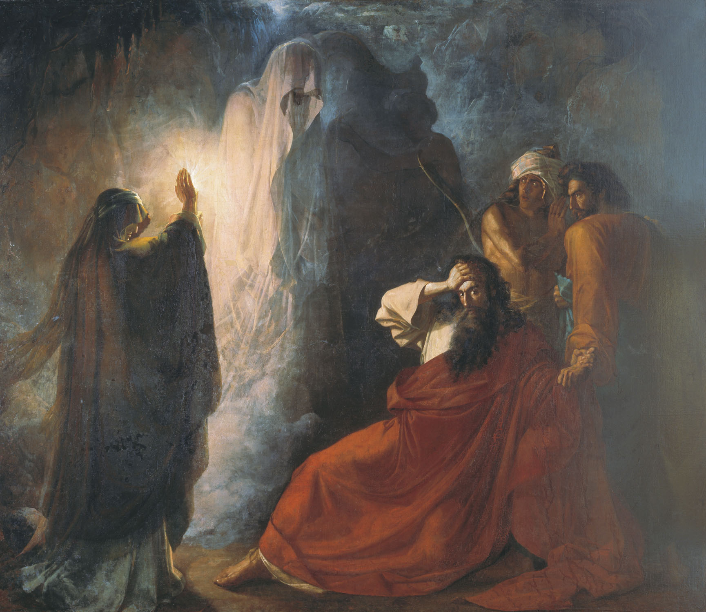
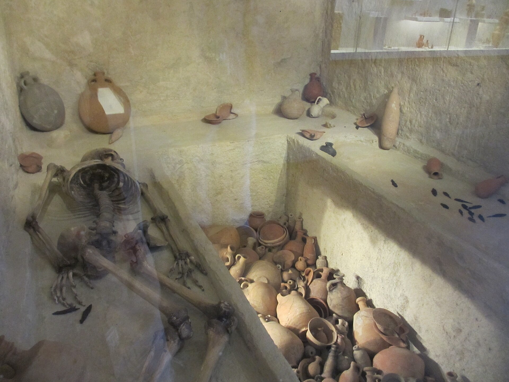
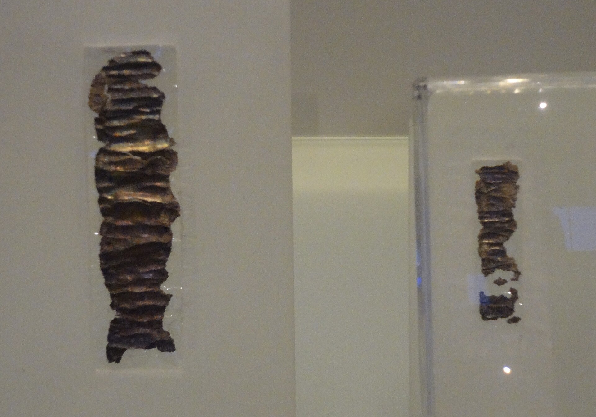

Israel no tuvo cielo ni infierno. Más allá sí tuvo, y era doble: uno subterráneo del que solo se habla con pánico, y otro con dirección postal, comida y luz.
Hay una palabra hebrea que aparece sesenta y cinco o sesenta y seis veces en la Biblia —ya veremos por qué la cifra baila— y que las traducciones castellanas reparten entre «sepulcro», «abismo», «profundo» y, treinta y una veces en la Biblia del rey Jacobo, directamente «infierno». La palabra es sheʾol. Y el reparto es ya una interpretación: el hebreo usa un solo término donde el traductor decide, versículo a versículo, si está hablando de una fosa o de la condenación eterna.
Sobre lo que el Sheol no es se puede ser bastante preciso, porque los textos son pocos y están todos listados. Lo difícil es la otra mitad del asunto, y es la que casi nunca se cuenta: que la ausencia de un infierno no significa que Israel no tuviera un más allá. Tenía uno. Estaba a veinte metros de su casa, excavado en la roca, y le llevaban comida.

Antes de entrar en qué hay en el Sheol conviene una observación de método que hizo Philip S. Johnston y que, una vez vista, ya no se puede desver: sheʾol no aparece nunca en narración en tercera persona ni en material legal. No hay una sola ley sobre el Sheol, ni una sola crónica que lo mencione de pasada. Aparece casi exclusivamente en primera persona: lamentos, súplicas, discurso directo, poesía.
Es decir: el Sheol no es un elemento del mobiliario doctrinal de Israel. Es lo que alguien dice cuando está aterrorizado. Jacob lo nombra creyendo que José ha muerto. Ezequías lo nombra desde la enfermedad. Los salmistas lo nombran cuando están hundidos. Y esa distribución explica por qué el material es tan escaso y tan uniformemente negro: nadie describe el Sheol con calma, porque nadie habla del Sheol si no tiene miedo.
Lo que esos textos le atribuyen es consistente. Está abajo: al Sheol no se «va», se baja —yarad, con la terminación direccional sheʾolah—, y es el punto más bajo del cosmos. Hay polvo, oscuridad, silencio y olvido. Tiene puertas y cuerdas. Sus habitantes son los refaim, sombras débiles. No se sale. Y —esto es lo que más sorprende a quien espera un reino enemigo— Dios llega hasta allí: «si tiendo mi lecho en el Sheol, ahí estás tú».
אִם־אֶסַּק שָׁמַיִם שָׁם אָתָּה וְאַצִּיעָה שְּׁאוֹל הִנֶּךָּ Salmo 139,8
No hay juicio. Ninguno de los pasajes donde aparece la palabra contiene vocabulario judicial —shafat, din, mishpat— aplicado al Sheol. No hay tribunal, no hay juez, no hay sentencia. Lo que los textos describen no es retribución sino cese de función: «los muertos no saben nada», «no hay obra ni cálculo ni conocimiento ni sabiduría en el Sheol».
No hay separación de justos y malvados. Todos bajan. Jacob espera reunirse allí con José; Saúl, con Samuel; y los reyes de Babilonia y de Egipto están allí también. Hay un pasaje que se cita en contra, Ezequiel 32,17-32, y merece que se mire de cerca porque es el más interesante del expediente: ahí sí se distribuye a los muertos por grupos. Pero el criterio no es moral. Es nacional y militar: unos bajaron «con sus armas de guerra y con sus espadas bajo sus cabezas», otros yacen «incircuncisos, atravesados por la espada». Eso es una distinción de honor entre muertos, categoría bien atestiguada en todo el Próximo Oriente, y no un premio y un castigo.
No hay fuego. El texto que siempre se cita es Deuteronomio 32,22: «un fuego se ha encendido en mi nariz y ha ardido hasta el Sheol más bajo». Léase entera la frase y se ve lo que dice: describe hasta dónde llega la ira de YHWH —hasta el punto más bajo del universo—, y sigue con la tierra, sus frutos y los cimientos de los montes. No hay muertos ardiendo. El otro candidato, Isaías 66,24, sí tiene gusano y fuego inextinguibles, pero están sobre cadáveres, fuera de Jerusalén, a la vista de los vivos, y el versículo no menciona el Sheol: es la imagen de la negación de sepultura, que en esa cultura era lo peor imaginable.
Y no hay alabanza, que es la ausencia que de verdad angustia a los salmistas. «Los muertos no alaban a YH.» «¿Contarán tu misericordia en el sepulcro?» El problema del Sheol, para quien escribió esos versos, no es que allí se sufra. Es que allí se deja de dar culto. Para esa religión, eso es peor.
Casi todo el mundo ha oído la explicación: la Gehena era el valle de Hinom, al sur de Jerusalén, donde la ciudad quemaba su basura y los cadáveres de los criminales; los fuegos ardían de continuo, y de ahí sacó Jesús su imagen del fuego que no se apaga. Es ordenada, es material, es satisfactoria y no tiene ninguna base en fuente antigua.
La afirmación se puede rastrear. Aparece por primera vez en el comentario al Salmo 27 de David Kimhi, el Radak, rabino provenzal que vivió entre 1160 y 1235 y escribió ese comentario hacia 1200 —o sea, mil doscientos años después de los hechos que supuestamente describe—. Quien hizo el rastreo fue Lloyd R. Bailey en The Biblical Archaeologist en 1986, y su veredicto es que la teoría no tiene «apoyo en fuentes literarias ni en datos arqueológicos». Antes que él lo había dicho Edward Robinson en 1841 y James Montgomery en 1908; después, Strack y Billerbeck, Beasley-Murray, y Davies y Allison en el comentario crítico internacional a Mateo.

Pero desmontar una leyenda sin más es perezoso, y hay tres cosas que la corrección debe añadir para ser honesta.
La primera: el fuego del valle sí tiene origen textual, solo que otro. El valle de Hinom está asociado al fuego en los propios textos hebreos, y por una razón bastante peor que la basura. Allí estaba el Tofet, donde se quemaba a niños; Jeremías 7,31 y 2 Reyes 23,10 lo dicen. Jeremías anuncia además que allí se enterrará «por falta de lugar». Jesús no necesitaba ver basura ardiendo para hablar de la Gehena: tenía a Jeremías y tenía a Isaías.
La segunda: hay un apoyo antiguo remotamente relacionado, y conviene mencionarlo en vez de esconderlo. Nehemías nombra una «Puerta del Muladar» en el sector sur de la muralla. Pero dónde estaba exactamente y qué relación tenía con el Hinom es inferencia, no dato; el texto no dice nada de fuegos; y que hubiera un vertedero no implica un vertedero ardiendo perpetuamente. Es un argumento débil, y decirlo así es más fuerte que callarlo.
Y la tercera, que remata el asunto y que casi nadie usa: sabemos dónde tiraba su basura Jerusalén en el siglo I, porque está excavada. Está en la ladera oriental del valle del Cedrón, a unos cien metros al sudeste del Monte del Templo, y se extiende al menos cuatrocientos metros. La cerámica y las monedas la datan entre el siglo I a.C. y el año 70. Está en el otro valle. Y el estudio no reporta combustión sistemática.
«No hay evidencia de que se mantuvieran otros fuegos en el valle.» Es la primera negación publicada, y es de hace casi dos siglos.
El lugar «no parece tener nada físicamente desagradable». Un arqueólogo mirando el valle real, no el valle de la homilía.
El rastreo hasta Kimhi, y el veredicto en cinco palabras: «sin apoyo en fuentes literarias ni en datos arqueológicos».
La teoría es «sin apoyo antiguo». Cuando el comentario crítico internacional a Mateo lo dice en esos términos, el asunto está cerrado.
El basurero real, excavado: ladera oriental del Cedrón, cuatrocientos metros de largo, siglo I a.C. al año 70. En el otro valle. Y sin combustión sistemática.
Antes de llegar a la tumba conviene detenerse en el episodio que siempre se cita como prueba de que Israel creía en almas: Saúl, la víspera de su última batalla, va a ver a una mujer de Endor para que le suba a Samuel del inframundo.

El episodio sirve, pero no para lo que se le suele hacer servir, y la razón está en dos palabras del hebreo. Cuando la mujer ve lo que sube, no dice que vea un alma ni un espíritu. Dice ʾelohim ʿolim min-haʾareṣ: «seres divinos que suben de la tierra», y lo dice en plural.
No hay nefesh en el pasaje, no hay nada incorpóreo ascendiendo, y lo que sube no pertenece a una categoría antropológica sino a una categoría divina — la misma palabra con que el texto nombra a Dios y a los miembros de la corte celeste. Samuel, además, aparece reconocible: viejo, envuelto en un manto. No es una sombra: es alguien con ropa.
Lo que el episodio sí prueba es lo que importa aquí: alguien pensaba que los muertos seguían estando en algún sitio y que en circunstancias extremas se les podía sacar. Y lo prueba también por otra vía, la de la ley: la Biblia prohíbe la necromancia repetidamente, y una prohibición insistente es la mejor evidencia de que la cosa se hacía.
Sobre cuánto se hacía hay debate real y conviene darlo. Philip Johnston sostiene que estos episodios son aberraciones que no reflejan la práctica corriente israelita; John McLaughlin le responde con un argumento difícil de esquivar: la ley responde a la práctica. Y Brian Schmidt añade una tesis que da la vuelta a lo que suele decirse — que la necromancia no sería un residuo cananeo antiguo sino una importación mesopotámica tardía, de la monarquía final o del exilio.
Aquí es donde la divulgación se equivoca en la otra dirección. «Los israelitas no creían en el más allá» se repite tanto como lo del basurero, y es igual de engañoso, porque confunde dos proposiciones distintas: no había cielo ni infierno —que es cierto— y no había más allá —que es falso—.
El más allá de Israel estaba en la roca. La tumba de banco del Hierro II es una cámara excavada con bancos tallados a lo largo de tres paredes, a veces con reposacabezas en forma de herradura, y un repositorio hundido al fondo. El procedimiento tenía dos tiempos: el cadáver se depositaba en el banco; cuando la carne había desaparecido, los huesos se recogían y se pasaban al repositorio, donde se mezclaban con los de las generaciones anteriores.
Eso es, literalmente, lo que significa la fórmula bíblica «fue reunido con sus padres». No es una metáfora piadosa: es una descripción de lo que se hacía con los huesos.


Y con los muertos se dejaban cosas. Cerámica de mesa, decantadores de vino, jarras de agua, cuencos, muchas lámparas de aceite, frasquitos de perfume, joyas, amuletos, figurillas, sonajeros. El caso mejor documentado es la cámara 25 de la cueva 24 de Ketef Hinnom, excavada por Gabriel Barkay en siete campañas entre 1975 y 1996: el derrumbe del techo la selló y la escondió de los saqueadores antiguos, y es el único repositorio del Jerusalén del Primer Templo hallado con su contenido intacto. Más de mil objetos, correspondientes al menos a noventa y cinco individuos.
Entre ellos, en 1979, aparecieron dos rollitos de plata enrollados. Tardaron tres años en poder desenrollarse. Llevan grabada una forma de la bendición sacerdotal de Números 6,24-26 —«que te bendiga YHWH, que te guarde»— y son de los testimonios más antiguos del nombre divino en escritura hebrea, anteriores en casi cuatro siglos a los manuscritos del mar Muerto.
Dos precisiones sobre eso, porque son de las que esta casa no se salta. La primera: no prueban que el Pentateuco existiera en el Primer Templo, y los propios especialistas lo advierten expresamente. La segunda, más interesante: los amuletos con el nombre de YHWH estaban en el mismo depósito que una figurilla de Bastet y un ojo de Horus. La religiosidad doméstica de Judá no distinguía tanto como distinguen los manuales.
Israel no tuvo cielo ni infierno. Pero más allá sí tuvo, y eran dos: uno cosmológico, del que hablan los textos, y otro familiar y material, del que habla el suelo. Se les hacen las mismas doce preguntas y se ponen las dos fichas una al lado de la otra. Pulsa cualquier casilla.
Y ahora el dato que obliga a matizarlo todo, y que casi nunca acompaña a las fotografías de las tumbas de banco: esas tumbas son de élite. Se conocen unas trescientas de todo el período monárquico de Judá. Según el cálculo de Barkay, las de Jerusalén corresponden a alrededor del 1,5 % de los difuntos de la ciudad durante la monarquía. La inmensa mayoría de los judaítas se enterró en fosas simples que no dejan prácticamente rastro arqueológico.
De modo que todo lo anterior describe lo que hacía con sus muertos quien podía pagarlo. De lo que hacía el resto sabemos muy poco, y conviene no rellenar ese hueco con la imaginación.
Sobre lo que significan los ajuares hay además un debate real que no se puede resolver desde el suelo. La lectura mayoritaria —Elizabeth Bloch-Smith, Theodore Lewis, Francesca Stavrakopoulou, Matthew Suriano— es que implican la creencia de que el muerto necesitaba sustento, y se apoya en el paralelo mesopotámico del kispum y en textos como Deuteronomio 26,14, que prohíbe dar comida a los muertos —una prohibición que presupone que alguien lo hacía—. Frente a ella, Brian Schmidt y Philip Johnston sostienen, con razón, que un ajuar no es por sí mismo un rito repetido, y que puede ser exhibición de estatus o provisión para un viaje.
Lo firmable es esto: el suelo dice que se puso comida, bebida y luz junto a los muertos. El suelo no dice, por sí solo, si eso era culto, cortesía o prestigio. Eso lo dicen los textos, y los textos están en litigio.
Las ausencias de esta entrega son consenso y se pueden comprobar una a una, que es la ventaja de las afirmaciones negativas cuando el corpus es pequeño: no hay vocabulario judicial aplicado al Sheol, no hay fuego dentro de él, no hay separación moral de sus habitantes. La falsedad de la leyenda del basurero también es consenso, con expediente de negaciones publicadas desde 1841.
Lo que está en debate abierto es qué significan los ajuares. Que se depositó comida, bebida y luz es descripción arqueológica. Que eso implique un culto a los parientes muertos es la lectura mayoritaria —Bloch-Smith, Lewis, Stavrakopoulou, Suriano—, pero Brian Schmidt y Philip Johnston oponen un argumento válido: un ajuar no es ipso facto un rito repetido. Y la lámpara junto a la cabeza que «iluminaba el camino en el inframundo» es interpretación simbólica sin sustento textual antiguo: se dice como hipótesis o no se dice.
Dos cifras con su procedencia, no promediadas. Sheol aparece entre 65 y 66 veces: dos versículos la traen dos veces, y el caso litigioso es Isaías 7,11, donde el texto masorético vocaliza «profundiza la petición» y la Septuaginta leyó «hacia el Sheol». Y las trescientas tumbas de banco conocidas representan, según el cálculo de Barkay, en torno al 1,5 % de los difuntos de la Jerusalén monárquica: la muestra arqueológica está sesgada hacia arriba, y hay que decirlo cada vez que se enseña una.
Y la simetría obligatoria: el escepticismo divulgativo exagera tanto como la homilía. Matthew McAffee le reprocha a Suriano que su «inmortalidad funcional» excluya toda esperanza de más allá en el pensamiento bíblico. La discusión sobre si la resurrección es un desarrollo interno o un estímulo exterior sigue abierta, y es el asunto de las dos entregas siguientes.
El Sheol indiferenciado no dura para siempre. En algún momento aparecen compartimentos, y con ellos el juicio. La pregunta es cuándo, y la respuesta tiene fecha y texto.
No es Daniel 12, aunque sea el pasaje famoso. Daniel 12,2 —hacia el 165 a.C.— habla de despertar «de los que duermen en el suelo de polvo», unos para vida eterna y otros para oprobio, pero ese destino diferenciado está después de la resurrección, no dentro del Sheol.
El primer texto datable que pone compartimentos dentro del ámbito de los muertos es 1 Enoc 22, del Libro de los Vigilantes, siglo III a.C. Enoc es llevado a una montaña en occidente donde hay «lugares huecos», cámaras, en las que los espíritus de los muertos se reúnen separados: los justos junto a una fuente de agua luminosa, y los pecadores retenidos «con gran dolor hasta el gran día del juicio». Los manuscritos arameos hallados en Qumrán fijan el límite: el más antiguo es de comienzos del siglo II a.C.
Eso importa mucho más de lo que parece, y es el hilo que esta serie va a tirar en la entrega IV. Porque la historia que todo el mundo cuenta —que el alma inmortal y el estado intermedio llegaron al judaísmo desde Grecia— tiene, en su punto decisivo, un problema de fechas.
Texto hebreo cotejado contra la edición Miqra according to the Masorah. Los sesenta y seis pasajes de sheʾol están listados y verificados uno a uno.
Philip S. Johnston, Shades of Sheol: Death and Afterlife in the Old Testament, Apollos/IVP, 2002 · John L. McLaughlin, reseña de Johnston en The Journal of Hebrew Scriptures · Matthew J. Suriano, A History of Death in the Hebrew Bible, Oxford University Press, 2018 · Elizabeth Bloch-Smith, Judahite Burial Practices and Beliefs about the Dead, 1992 · Brian B. Schmidt, Israel's Beneficent Dead.
Sobre la Gehena: Lloyd R. Bailey, «Gehenna: The Topography of Hell», The Biblical Archaeologist 49/3 (1986) 187-191 · Edward Robinson, Biblical Researches in Palestine I (1841) 404-405 · James A. Montgomery, «The Holy City and Gehenna», JBL 27/1 (1908) 34 · G. Bar-Oz, R. Bouchnick, E. Weiss, L. Weissbrod y R. Reich, «"Holy Garbage": A Quantitative Study of the City-Dump of Early Roman Jerusalem», Levant 39 (2007) 1-12.
Sobre la arqueología funeraria: Gabriel Barkay, «The Riches of Ketef Hinnom», Biblical Archaeology Review · Gabriel Barkay, Marilyn J. Lundberg, Andrew G. Vaughn y Bruce Zuckerman, «The Amulets from Ketef Hinnom: A New Edition and Evaluation», BASOR 334 (2004) · Alexander Fantalkin, «The Appearance of Rock-Cut Bench Tombs in Iron Age Judah as a Reflection of State Formation», en Bene Israel, Brill, 2008, 17-54 · David Ussishkin, The Village of Silwan, Israel Exploration Society, 1993 · Jeremy D. Smoak, The Priestly Blessing in Inscription and Scripture, Oxford University Press, 2016.